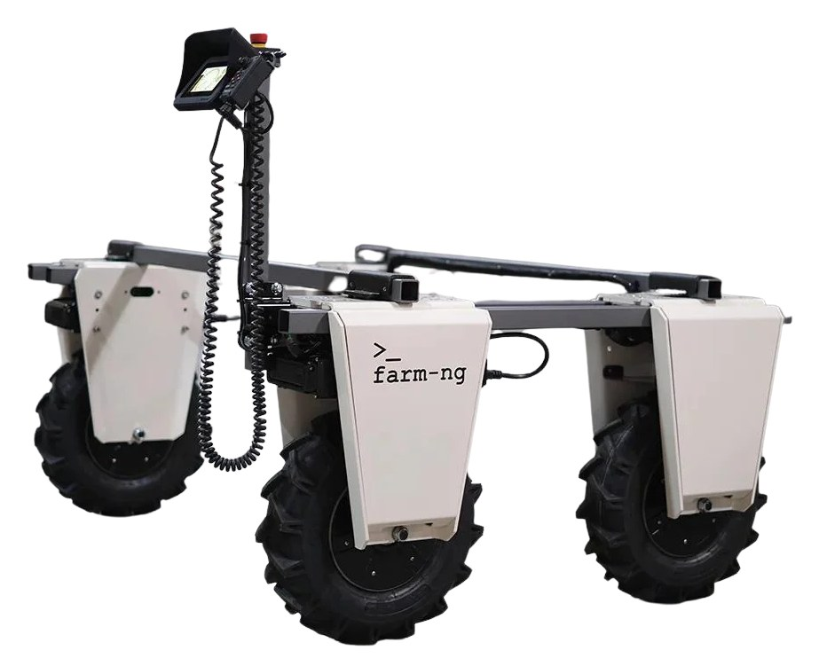
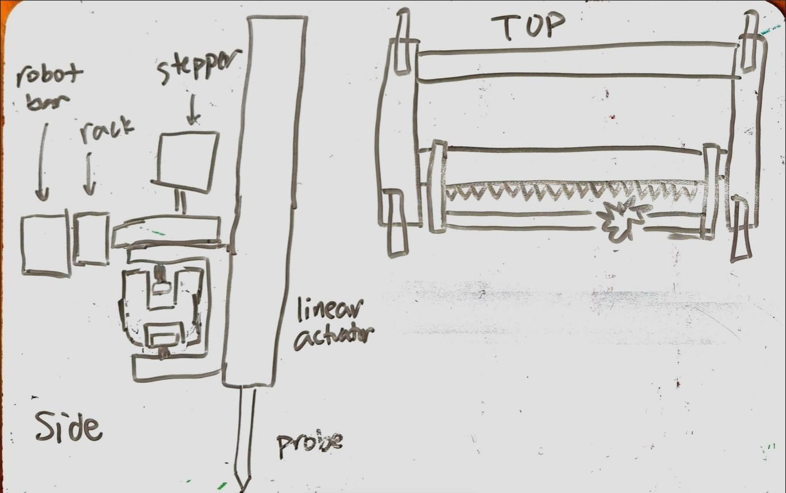
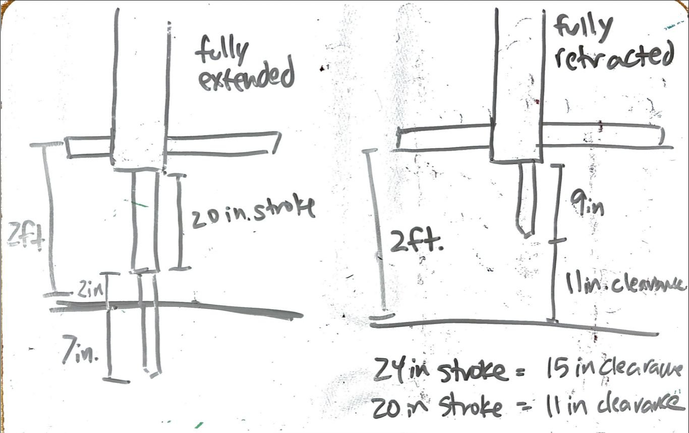
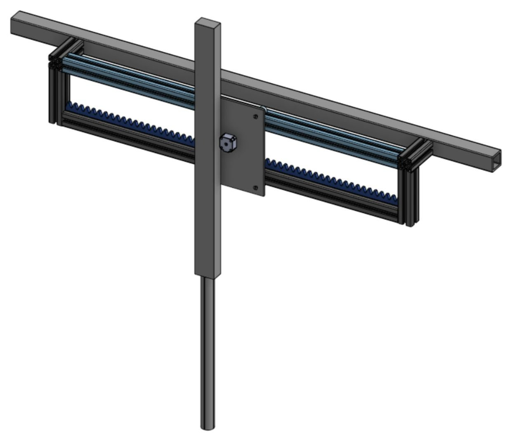
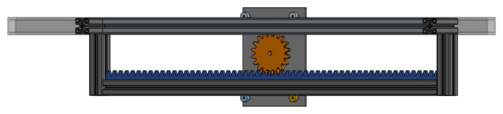

Soil Probing Ground Rover
A gantry that lets a farm rover autonomously probe soil moisture and health.
Overview
GroundFleet is an autonomous rover that drives through a field and takes soil moisture and other soil measurements, so farmers can know their soil health and how much water to give their crops. The goal is to design, build, and field-test a ground-based soil probing system on the farm-ng Amiga rover that can navigate to waypoints in a field and mechanically push a soil moisture probe into the ground to take measurements in place. I've been working on it since September 2026, and the target for completing phase 1 is April 2027. It's the ground-based counterpart to the soil sampling drone attachment; on the rover we're no longer limited by weight.
My role
I co-lead the five-person team and lead the mechanical design. The mechanical team is two people, so we do almost everything together, while the three-person software team works on GPS waypoint navigation in ROS 2 and computer vision for following crop rows. I design in Onshape.
Design & build
Learning from existing designs
We started with a literature review of other soil-probing robots. Most move along the field (x) by driving the robot, move the probe up and down (z) with a linear actuator or a lead screw, and have no side-to-side (y) motion. Some drill into the ground and some push a probe straight in. We compared the two z-axis options:
- Lead screw: more compact, and drills into the ground.
- Linear actuator: stronger and faster, probes straight into the ground, and has fewer moving parts.
Based on this, we chose a linear actuator that pushes the probe straight into the ground. Unlike most existing designs, we added y-axis motion with a gantry, so the probe can move side to side and reach the soil around crops.
Requirements
- Mounts to the Amiga and doesn't stick out past the sides of the robot, which is 63 in wide (45.5 in without wheels)
- Pushes the probe 7 in into the ground, based on the probe's length
- Keeps clearance between the probe and the ground while driving
- Moves the probe side to side (y) and up and down (z)


Gantry
The gantry uses a rack and pinion driven by a stepper motor for y motion and a linear actuator for z. A carriage runs along a 45.5 in aluminum extrusion on bearings, with a 45.5 in rack below it. Mounted about 2 ft above the ground, a 20 in stroke gives 11 in of ground clearance with the probe retracted (a 24 in stroke would give 15 in), while still pushing the probe 7 in into the soil when fully extended.


The actuator needed around 50 lb of force and had to be dirt and water resistant. The one we specced has a 20 in stroke (52.8 in long when extended), runs on 12 VDC, gives 56 lb of dynamic force at 4.72 in/s under full load, has a 15% duty cycle, and is rated IP66, so it's dust-tight and protected against high-pressure water jets. We're also considering current limiting the actuator to prevent damage to the probe.
Status and next steps
This project is in progress, and the design is being worked on right now. For the first sprint review we specced the parts, created the bill of materials, and finished the initial sketches and CAD. Next, we're finishing the CAD, ordering parts, and building a working prototype. The goal for the end of the semester is a working second version of the mechanical system with y and z motion, with the software team getting the rover to navigate to GPS waypoints and move the probe into the ground autonomously.